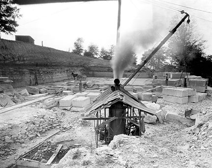

ROWAN COUNTY
Rowan County, the 104th county in order of formation, is located in the mountains of northeastern Kentucky. It is bounded by Fleming, Lewis, Carter, Elliott, Morgan, Menifee, and Bath counties and has an area of 282 square miles. Rowan County was formed from sections of Fleming and Morgan counties in 1856. The county was named for John Rowan, who represented Kentucky in the U.S. House of Representatives (1807-09) and the U.S. Senate (1825-31). The county seat is Morehead, the largest city in the county.
According to Fred Brown and Juanita Blair in their book, The Story of Two Kentucky Feuds, (2000), "The village of Morehead was laid out in 1856, the year Rowan County was formed, but not incorporated until 1869. Rowan's formation came about as a political ply to prevent Fleming County's county seat from being moved to Poplar Plains. The resulting county effectively removed sufficient agitators from the fray. Centrally located, Morehead presided over a county rich in steep wooded hillsides - and little else."
The topography of the county is hilly to mountainous. Most of the county is part of the Daniel Boone National Forest and has extensive hardwood forests. Only 32 percent of the county land is farmland; 35 percent is government-owned. Natural resources include timber, limestone, clay, and some coal. The principal water source is the Licking River and its impoundment, Cave Run Lake, which together form the county's southwestern border. Triplett Creek is the major tributary in the county.
It is believed that a party of surveyors from Pennsylvania, led by George William Thompson, first explored the area around Triplett Creek in the summer of 1773. The first settlers of the area came mostly from Virginia to claim land grants for service in the Revolutionary War. Many of these people settled in fertile valleys along the Licking River and Triplett Creek. One of the first communities to develop was Farmers, located in the western part of the county on the Licking River. It was settled by Maj. Jim Brain, who established a hotel at the junction of two roads. Clearfield, located just south of Morehead, was settled by Dixon Clack in the early nineteenth century and grew around his water-powered sawmill and store. Morehead was probably the third community to be established in the county and likewise grew around a sawmill, which was operated by Jake Wilson. It became the county seat when Rowan County was founded in 1856.
By the 1860s Rowan County was made up of a scattering of small communities. Corn was the dominant crop and timbering the major industry, with logs floated down Triplett Creek and the Licking River. During the Civil War, the residents of the county were often threatened with attack by guerrillas who, on March 21, 1864, burned the new county courthouse. On June 12, 1864, Gen. John Hunt Morgan's Confederate cavalry camped near Farmers.
Three hundred Confederate cavalry under Col. Peter Everett passed through Eastern Kentucky in order to attack the Union supply depot at Maysville, where, on June 14th, they captured 50 horses, 330 rifles, and 25 pistols. On the next day, near Olympian Springs in Bath County, they ambushed Major R. T. Williams and thirty men of the 14th Kentucky Cavalry, killing eleven and capturing twelve. On June 16th, 1863, two battalions of the 10th Kentucky Cavalry led by Lt. Col. R. R. Maltby overtook Colonel Everett’s command at Triplett’s Creek Bridge near Morehead in Rowan County. Maltby’s men surrounded the Confederates, defeated them, and took 38 prisoners. When DeCourcey’s 8th Michigan Cavalry arrived on the scene, mistaking Maltby’s men for the enemy, Evertt and the rest of his men slipped away and returned to their base in Russell County, Virginia.
Although stone, coal, and timber were the county's main resources, they were not exploited in great quantities until the Elizabethtown, Lexington & Big Sandy Railroad arrived in the county in the early 1880s. The town of Farmers expanded quickly and was the largest city in the county until most of the timber was depleted around 1900. Rodburn, Eadston, and Brady also grew as lumber towns situated on the railroad. Rockville and Bluestone developed as rock quarry centers.
 |
Rock Quarry at Bluestone |
To serve the mining and logging operations, several small railroads were built in Rowan County. The largest was the Morehead & North Fork Railroad (later abandoned), which by 1908 connected the Chesapeake & Ohio Railroad at Morehead with Redwine in Morgan County. Numerous tributary spur lines extending from it moved products of the mills and mines to Morehead. Two other short lines in the county were the Kentucky Northern Railroad, which hauled logs from 1896 until its abandonment in 1900, and the Christy Creek Railroad, built by the General Refractories Company to haul clay from 1920 until 1948, when it was abandoned.
Old Rowan County Courthouse |
The Martin-Tolliver feud, known as the Rowan County War, focused national attention on the county. After three years it ended in a bloody gun battle in Morehead on June 22, 1887. In an unsuccessful attempt to stop the fighting, the General Assembly took the unusual measure of proposing to dissolve Rowan County unless the feud stopped.
Prompted by donations from a former Confederate soldier, Morehead Normal School was founded in 1887 by Phoebe Button. In 1922 the school gained state support and in 1966 became known as Morehead State University. MOONLIGHT SCHOOLS were first established in Rowan County in 1911 to give night instruction to pupils of all ages. The founder, Cora Wilson Stewart, was credited with making great strides in the fight against illiteracy in the area.
Kentucky Firebrick Company |
As the timber resources in the county were exhausted, clay deposits were mined on a large scale. The town of Haldeman was founded five miles northeast of Morehead by L.P. Haldeman to accommodate workers of his Kentucky Firebrick Co., which opened before 1907. The plant closed during the Great Depression. Lee Clay Products, which purchased the assets of the Clearfield Lumber Company in 1925, produced clay sewer and chimney pipe until the 1970s.
Clearfield Lumber Company |
By the 1950s, tobacco had replaced corn as the county's leading farm crop. Corn, hay, poultry, and cattle are also raised. When I-64 was completed through the somewhat isolated area in 1969, some industrial growth was experienced. In 1990 the leading employer in the county was Morehead State University. A boost to tourism was the 1974 impoundment of Cave Run Lake. The 8,200-acre lake is the largest in eastern Kentucky.
The population of Rowan County was 17,010 in 1970; 19,049 in 1980; and 20,353 in 1990.
See Stuart Sprague, A Pictorial History of Eastern Kentucky (Norfolk, Va., 1986).
From The Kentucky Encyclopedia, edited by John Kleber. Copyright 1992
Photographs of Rowan County, Click here.
The Rowan County News
April 30, 1936
EARLY HISTORY OF ROWAN COUNTY AS TAKEN FROM
THE RECORDS OF THE FIRST ESTABLISHED WOMENS CLUB HERE
Giving a Glimpse of the Organization And Its Community Effect.
When Rowan County was a part of Fleming County, in 1791, Jacob Powers and Barnett Simmons came here from Virginia. Both were men of considerable wealth and owned many slaves. Jacob Powers was the grandfather of H. M. Logan. At this time Lewis D. Lee owned the farm now known as the Marion Tolliver farm and donated the ground for what is now the Lee Cemetery. Ben Evans lived in the log house which stood on the property now occupied by Cornelious Caudill. He was the father of Mrs. Boone Logan of Pineville, Ky. Uncle Tom Trumbo lived across Triplett Creek in the house burned. Aunt Polly Cassity lived on and owned quite a boundary of land in the west end of Morehead, later known as the Judge J. W. Riley farm. Mr. William Nickell, grandfather of George and William Nickell was one of the early settlers. Mrs. Libby Oxley, grandmother of George and William Nickell, owned much of the land on which Morehead now stands, and lived on the site now occupied by Will Hogge's store. E. Houston Logan, father of Mrs. Queen Clark, lived on what is known as the Frank Nickell farm now owned by Dr. A. L. Blair. Ben Johnson built the house occupied for a time by Can Caudill next to the Masonic building. Elias Bradley, familiarly known as Grandfather Bradley, owned the land where Clearfield now stands. Mr. James Black also owned much land here. William Logan was one of the most prosperous men of the county. All of the above named people lived here before the Civil War. In 1854 Colonel Hargis came here and purchased from Mrs. Oxley, the land and marked out the town of Morehead, after Governor Morehead, one of Kentucky's early governors. The county was then cut off from Fleming and Morgan Counties and named Rowan, after Judge John R. Rowan of Fleming County. The first offices elected were James Black, jailer, Isaac Johnson, sheriff. Then came the Civil War and but little progress was made for some time.
Other early arrivals in Morehead were; 1869, James E. Clark, father of Mrs. J. W. Riley. 1870, Doctor Banfield. 1871, Z. T. Young, 1873, H. M. Logan, 1874, Grandfather Carey, 1875 Harry Burns, 1876 James Moody, 1880 Uncle Cloy Powers, 1881 Mr. Hamilton, 1882 Dr. Raine, 1887 Dr. Frank C. Button and mother.
Rowan County Named After Judge Rowan, Noted Jurist of Early Days
Rowan Named After Founder and Builder of Old Kentucky Home
April 30, 1936
"Rowan County has a claim to distinction that no other county in Kentucky has, even including Nelson, where "My Old Kentucky Home" is located. For of all the counties in the state of Kentucky, Rowan has the good fortune to be named in honor of the founder and establisher of the beautiful brick home near Bardstown, the home in which Stephen Foster penned his immortal song, the mecca for loyal Kentuckians, thousands of whom visit the shrine each year.
Judge Rowan was the uncle of Stephen Foster, who spent many years of his life and who wrote most of his great and enduring songs while visiting at the home in Bardstown..
The boundaries of Rowan County on its inception were as follows. "That from and after the first day of May 1856 so much of the counties of Fleming and Morgan as lies with the following boundaries shall be and the same is hereby erected into and established a separate and distinct county to be called Rowan, viz: Beginning at the Elk Lick on the Licking River near Fielding Cooper's in Fleming County; running thence up the Licking to the mouth of North Fork of the said river, in Morgan county; thence up said North Fork of said river to the mouth of Creek called Miner's Creek; thence up said creek to the mouth of a branch running by the residence of
Fire Tower near Clearfield off Dry Creek Road
(circa 1946) |
Jedediah Day; thence up the said branch to the head thereof; thence down a creek called Laurel Creek, to the mouth of Bate's branch; thence with the ridge east of Bate's branch to the head of the twin branches of Caney Creek, to the line of Carter County to the boundary line between Cart and Fleming counties, to the point at which the boundary lines of Carter, Lewis and Fleming counties intersect each other, thence, with the boundary between Fleming and Lewis counties to the head of the east fork of Fox's Creek; and thence with the dividing ridge, between the waters of Fox and Triplett Creeks to the beginning."
The seat of justice for Rowan County was designated on the east fork of Triplett Creek at a point agreed upon by the commissioners and to be between the residences of Dixon Clack and B. F. Powers. The name of the seat of justice was to be Morehead, in honor of James T. Morehead, at one time Governor of Kentucky. The commissioners selected to locate the city of Morehead were Harvey T. Wilson, William Mynhier, George W. Crawford, Mason Williams and William Grannis. Among these names are some that still make up some of the names to be found in the county at the present time.
The commissioners met at the house of Dixon Clack March 1856. There findings were to be written up and given to E. H. Logan or B. F. Powers and this certificate to be handed to the County Court Clerk and whose duty it was to record in records of the county and a duplicate sent to the Secretary of State of the Commonwealth.
The county was divided into four districts in each was to be elected two justices of the Peace and one constable, which districts shall be the election districts; Dixon Clack, Isaac E. Johnson, B. F. Powers and M. C. Royce were appointed commissioners to lay off the above districts..
Judge Hargis stepped of the land which is now used as the public grounds in Morehead. Rowan County was given the right to use the jail of Fleming County until a jail was built in Morehead.
The city of Morehead was incorporated January 26, 1869, even though it was laid out as early as 1856.. It had a population of about 200. Today this growing Metropolis boasts of a thriving city of close to 2,000 population and a resident student body of 1000 to 1400 from all sections, in a $2,000,000 school plant. Practically every street in the city is paved, whereby not over 15 years ago, many oxen were seen lying in the mud on the main thoroughfare. The early type home has given way to modern homes and supplied by modern conveniences.
The first member of the legislature from Rowan County was Harrison G. Burns, who served from 1859 to 1861. Up to 1874, there had been no resident Senator from Rowan County but since then Rowan County has supplied the legislature with some of the leading statesmen and among the more recent and noted one, was our own Senator Allie W. Young, who gave to the district many things that stood out as monuments to his labor.
The count was once covered with vast resources of timber and furnished millions of board feet of the nation's best hardwood. Many saw mills working throughout the county, furnished the supply of lumber.
The Morehead News
February 2, 1977
Farmers Once Industrial Center Of Rowan County
By SUE LOWE
(Information for this article was obtained from pamphlets and a written account of Rowan County's history by J. H. Powers, both located in the Kentucky Room at Johnson Camden Library.)
Although Morehead is the county seat of Rowan, other settlements were larger and more progressive in Rowan's early history.
Farmers was the first settlement in Rowan. It quickly grew into a booming river town because of its industry.
Located ten miles west of Morehead, it was first named Cross Roads because it was situated where the road running parallel to the Licking River crossed with the road running east and west.
As early as 1792, settlers came to Cross Roads after receiving land grants from the United States Government for their services and patronage in American Revolution.
The settlers kept pouring into Cross Roads. Its population increased rapidly because of its river location, fertile farming land, and the abundance of virgin timber alongside the Licking River.
Before the coming of the Elizabethtown, Lexington and Big Sandy Railroad in 1882, Cross Roads and Morehead were the only incorporated towns in the county. The town of Cross Roads changed its name to Farmers with the advent of the railroad.
The railroad later sold out to the Cheasapeake and Ohio Railway Company {C & O}. Farmers still remained the largest town in the county.
Industry at Farmers
Farmers, being a river town, was the industrial center of the county. There were several saw mills in Farmers. The largest were the Keystone Lumber Company, J. R. Buchwalter Company, and the P. L. Reese Company.
In 1845, the town sent an estimated 35 - 50 soldiers to fight in the Mexican War.
In 1896, a tax of $500 per saloon was levied in Morehead. The tax provided money to construct hard surface roads in the town. In 1920 the road was extended to Farmers.
Also in the 1890's, settlers from New York constructed a stone mill at Bluestone where native stone was sawed for building purposes. The mill was later forced out of operation in 1930 because of the increased use of limestone and concrete for construction.
In 1903 or 1904, a German-owned company manufactured several million barrel staves on the headwaters of Licking River. These barrel staves were shipped back to Germany.
The company employed Nim Coburn and Frank Prater to bring the staves down the river to Farmers. The men would wait for the high tide to throw all of the staves in the river. Then they would follow behind the staves in boats for an estimated 100 miles.
Coburn and Prater were so successful that they had to hire additional men to help them. Booms were constructed across the river at Farmers to catch the staves as they floated down. Few staves were lost.
After the timber was exhausted along the Licking River, the mills were destroyed. The townspeople began to move on to seek employment elsewhere.
Second Settlement
Clearfield, the second settlement in the county, had the first and largest saw
mill.
Settlers were attracted to Clearfield because of the abundance of fish and wildlife.
In the early 1800's, settlement began at Clearfield. Dixon Clack, an old Virginia aristocrat, erected the first, or one of the first, homes built in Clearfield. Clack Mountain was one of the boundaries of his property.
In 1820, Jacob Clack erected a saw mill at Clearfield. The mill was operated by water power.
Settlers by the name of Deadman received land grants and became prominent persons in Clearfield's early history.
In 1905, the Clearfield Lumber Company was founded by a Pennsylvania corporation. This mill, along with the smaller mills, took all the virgin timber in the county. The mill operated for seventeen years and it employed 300 men. It was located at the site of Lee Clay Products.
Another large saw mill was erected in the county with the advent of the railroad. The Hixon Rodburn Lumber Company was located at Rodburn and was owned by settlers from New York. The mill was destroyed by fire about 1896.
Year Population (sq.mi) Density
2000 22,094 280.8 78.7
1990 20,353 280.8 72.5
1980 19,049 280.8 67.8
1970 17,010 280.8 60.6
1960 12,808 280.8 45.6
1950 12,708 280.8 45.3
1940 12,734 280.8 45.3
1930 10,893 280.8 38.8
1920 9,467 280.8 33.7
1910 9,438 272.0 34.7
1900 8,277 270.0 30.7
1890 6,129 270.0 22.7
1880 4,420 281.2 15.7
1870 2,991 281.2 10.6
1860 2,282 279.4 8.2
Morehead's Namesake, James T. Morehead:
Taken from an article entitled Two men named Morehead left their mark on Kentucky
Pieces of the Past
By Jim Reis, Cincinnati Post staff reporter
"James T. Morehead, namesake of the Rowan County city for which Morehead State University is named, was the first native-born Kentuckian elected governor. He practiced law for many years in Covington and died here. He was born near Shepherdsville on May 24, 1797, the son of Armistead and Lucy Latham Morehead. When he was 3 the family moved to Russellville in Logan County, where he grew up. He attended Transylvania University and studied law under H. P. Broadnax and John J. Crittenden. Crittenden would prove a valuable connection.
Crittenden served several terms in the state legislature, as governor, secretary of state, twice elected to the U.S. Senate, appointed attorney for the Illinois Territory and was U.S. attorney general in President Millard Fillmore's cabinet. Morehead passed the bar in 1818 and practiced law in Bowling Green. He also was elected a state representative from Warren County. He married Susan A. Roberts in 1823. They had two children.
James Morehead made local newspaper headlines in 1832 when he ran for lieutenant governor. He was elected in what was an unusual voter selection as Morehead won under the political banner of the old National Republican Party, while John Breathitt was elected governor as a candidate for the rival Democratic-Republican Party. Breathitt, namesake of the Kentucky county, died midway through his term. Morehead, as lieutenant governor, thus became governor and was sworn in on Feb. 22, 1834. His term as governor was rather uneventful. After it ended, he practiced law in Frankfort.
Morehead again made statewide headlines in January 1839 when he and John Speed Smith were sent to Ohio to try to negotiate help from Ohio officials in the return of escaped slaves. The Ohio legislature agreed and in March 1839 passed a law punishing anyone aiding or abetting an escaped slave with a fine up to $500 or 60 days in jail. Morehead's popularity was such that the next year, on May 25, 1840, he was selected as the main speaker at ceremonies marking the anniversary of the first Kentucky settlement at Fort Boonesborough.
Morehead was then appointed to the U.S. Senate in February 1841 after his former mentor, Crittenden, was elected to the Senate but then resigned to accept the position of U.S. attorney general. Morehead served in the Senate through 1847. It was during Morehead's term as a U.S. senator that he moved to Covington. The Covington-based Licking Valley Register noted Morehead's arrival in a story on Sept. 9, 1843.
''Honorable James T. Morehead has taken up his residence in our city and we can not but congratulate our fellow citizens upon such an acquisition to our social circle.''
The same newspaper noted two years later on Feb. 15, 1845, that Morehead had become the senior partner in a Covington law firm with John White Stevenson that would serve in the courts of Boone, Campbell, Gallatin, Grant, Harrison and Kenton counties. Their law office was on Market Street in rooms above the store of Cooper, Berry and Co.
At the end of his Senate term, a reporter for the Philadelphia North American praised Morehead as one of the ablest people in the Senate and a rising star in the Whig Party. The writer said it would be up to voters if Morehead would obtain higher office. The New York Tribune also lauded Morehead for his tireless service in the Senate.
Morehead, however, apparently had no further political ambitions. He told the Licking Valley Register he was out of politics and would devote his time to the law. Tragedy hit Morehead's family in May 1849, when his daughter, Maria, still just a young woman, died in Covington after an illness of eight days.
In addition to law, Morehead became involved in banking and education while in Covington. Newspaper accounts in 1849 list him among a group of local business leaders seeking a state charter for a bank and in 1850 he was listed as president of trustees for Covington Commercial College. The college offered classes in history and literature, mercantile law, bookkeeping, commercial correspondence and business. Also in 1850 Morehead's name appeared in a Covington Journal advertisement as the solicitor for the Kentucky Mutual Life Insurance Co., which had offices in Covington. And in August 1850 Morehead was among those who formed a library association in Covington.
Despite his pleas of no longer being interested in politics, James Morehead's name popped up in January 1852 for an opening in the U.S. Senate, after the death of Henry Clay. The Covington Journal reported several people were considered, including Morehead, but finally after seven ballots the state legislature appointed Archibald Dixon to the seat. Despite that loss, the Covington Journal noted that in February 1852 Morehead's name was being mentioned as a possible vice presidential candidate. That did not happen, but Morehead that year appeared in the community of Carthage in Campbell County for a rally on behalf of local Whig Party candidates. Tragedy struck the Morehead family again in August 1852, when Morehead's son-in-law, John H. Gore, died. Gore, a brevet major in the Army and veteran of the Mexican War, had spent several years at the Newport Military Barracks. At the time of his death, he was aboard the steamer Golden Gate in the Bay of Panama as part of a contingent of soldiers from the 4th Regiment on their way to assignment in California.
James Morehead died on Dec. 28, 1854, in Covington, at the age of 57. The Covington Journal said Morehead died from a ''painful and wasting disease, which baffled the best medical skill.'' The same account termed Morehead a ''profound jurist, an exemplary citizen, a devoted friend . . . remarkable for his social virtues and his charming conversational powers.'' The local bar and Masonic groups held special services in his honor. The decision was made to bury Morehead at the Frankfort Cemetery with full state honors. But the arrangements took a long time in developing and his funeral in Frankfort did not take place until June 1855 - more than five months after his death. The city of Morehead, established in 1856, was named in James Morehead's honor."